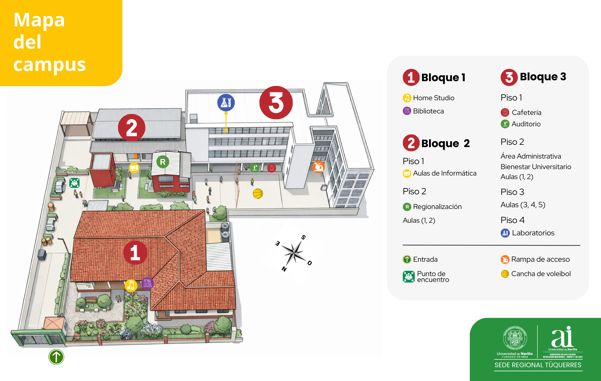

Calle 24 No. 13B – 62 Barrio la Reconstrucción. Túquerres – Nariño – Colombia.
Diagrama general de las instalaciones y distribución de la sede.

Explora nuestras instalaciones de forma inmersiva. Haz clic y arrastra para mirar alrededor.